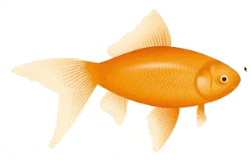

Image Sketchpad (responsive)

Draw on any image inside your desktop or mobile browser.
- Get image with drawing as base64 string or download it directly (original or browser sized)
- Get sketches as JSON data
- Load the sketches by the JSON
- Load by method or
data-sketchpad-json attribute
- Set options like line width or color
- Responsive: draw on the image and resize the browser. If the image resizes your sketch will do too. Also JSON data considered the image ratio so you can draw on a tiny image version (css resized!) and load the JSON data on a bigger version of the image.
- Demo
- Install
- Usage
- Browser: VanillaJS
- Documentation
- Sketchpad Options
- Sketchpad Methods after init
- ToDo
Demo
You can try a working example online: DEMO
Install
npm install image-sketchpad --save
# yarn add image-sketchpad
Usage
I have included different files for different usages
Browser: VanillaJS
First include the JS file at the bottom of your html page
<script src="image-sketchpad.min.js"></script>
</body>
</html>
Second initialize the sketchpad and bind it to an image
<img src="..." id="Image" />
<script src="image-sketchpad.min.js"></script>
<script>
var img = document.getElementById('Image');
var sketchpadOptions = {};
var sketchPad = ImageSketchpad(img, sketchpadOptions);
</script>
</body>
</html>
That's it!
Documentation
Sketchpad Options
Available Options
Default Options
Sketchpad Methods after init
Methods
ToDo
- Test with some kind like electron
- Write e2e tests
- Do not force PNG as image output format
- Better documentation/readme